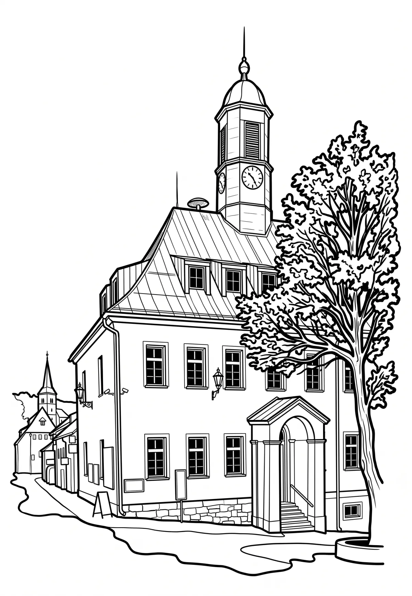

Boží Dar
Karlovarský kraj · 1028 m n. m.

město · #008
Boží Dar (německy Gottesgab) je město v Krušných horách na západě Česka v okrese Karlovy Vary v Karlovarském kraji u hranice s německou spolkovou zemí Sasko; je zde hraniční přechod Boží Dar – Oberwiesenthal. Leží v Karlovarském kraji asi dvacet kilometrů severovýchodně od krajského města.